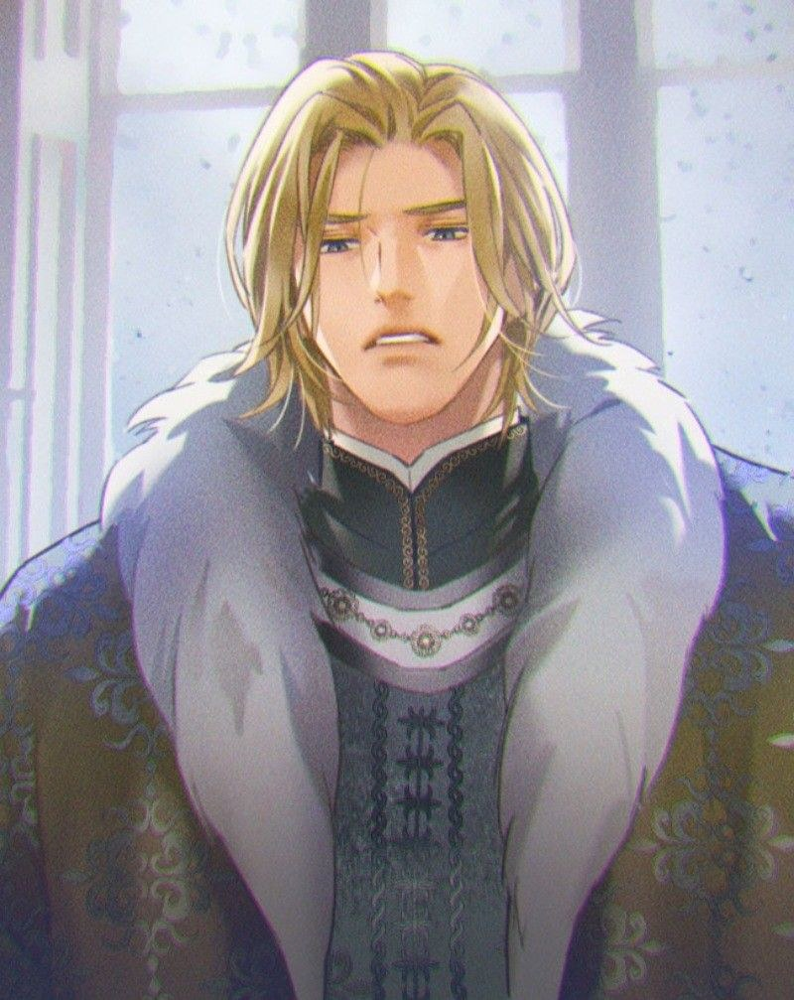

Sodoku Moto
Crown Prince of the North · The Author of Fate
I. Identity
Full Name: Sodoku Moto
Age: 13
Race / Lineage: Human · Moto, the Kōkan, the red line; Greymane through his mother
Faction: House Moto at Kharven-Seat. Eldest son of King Muken Moto and Queen Amelia Greymane, and heir to the red chair.
Epithet: The Author of Fate. Things around him come together as if he had written them.
Status: Alive
Family: Father Muken Moto; mother Amelia Greymane; brother Sonzai (13); sister Mizuyi, taken by Cozbi Mahuo on the night of her betrothal; younger brothers Tenma (12) and Kimizu (10).
Current Location: Kharven-Seat, the great hall, the night Mizuyi was taken
Catalyst Event: Born with the blessing of the limitless potential of Attraction Force.
II. Soul Architecture
| Stat line | Stage VI Glory · Expert (Faceted) Level 160 · Refined · Class offered, not yet named Fate VI Mastered, I · Spirit V Walked 50%, not yet read · Lenses: home + 1 |
| Level | 160; it holds Glory (115) and would hold Refraction (130), and no Residual Strain builds in him short of 200 |
| Stage | VI, Glory · Expert; the Stage roofs every Sub-Stat at 400 |
| Path | Fate VI Mastered · Spirit V Walked 50% |
| Mastery | Fate I, Touched: the lead, at Glory’s ceiling. The Moto blood opened it early, and his blessing is a grip, which lifts the cap the blood alone would set on it · Spirit: Walked a rung behind a lead of I, and not yet read |
| Yield (η) | 0.65, Fate I’s figure |
| Lenses | home Benediction + 1 held (Coagula), the Expert’s count |
| Class | offered at Glory, not yet named |
| Soul Crystal | Faceted, Refined |
| Points | 4,188 |
III. Wellspring Harmonizations
| Wellspring | Folk name | Kind | Titan | Operation | Hue | Depth | What it does in him |
|---|---|---|---|---|---|---|---|
| Benediction | the Grace | Fate | Florwyn | conjunction | warm red-gold | deep | A bond freely given weighs as a real thing. The knots he ties for people who love him hold harder than any others, and INOCHIZUNA’s lifelines run strongest along them. Strengthens Empathy, Axis and Oath. |
| Coagula | the Mending | Wild | Gaia | coagulation | amber-gray | held | Scattered things come back to the same table. Feuding cousins and lost friends keep finding themselves in one room with Sodoku in the doorway, which is EN-MUSUBI’s oldest habit. Strengthens Integrity and Coherence. |
Aura: warm red-gold, from the Grace he has tempered on longest, with a gray-amber seam where the Mending runs under it. It shows when he pulls, a warmth in the air round his hands like a hearth seen through a door.
IV–V. Stats
A normal look shows the Eight Primaries; a Primary is the total of its eight Sub-Stats, read by their mean (Dominion’s over seven, Throne outside it). Room to grow: every Primary sits under the Stage’s cap.
| Primary | Total | Sub-Stats |
|---|---|---|
| Vitality | 378 | Fortitude 54 · Absorption 47 · Constitution 61 · Hemostasis 43 · Regeneration 43 · Filtration 36 · Tolerance 47 · Threshold 47 |
| Ardency | 361 | Flux 47 · Alacrity 45 · Depth 52 · Penetration 41 · Compression 47 · Cascade 41 · Overchannel 41 · Density 47 |
| Gnosis | 654 | Perception 166 · Acuity 98 · Forecast 89 · Fluency 66 · Retention 66 · Analysis 77 · Cognition 54 · Vigilance 38 |
| Dexterity | 410 | Celerity 54 · Reflex 66 · Finesse 66 · Economy 61 · Evasion 47 · Grapple 31 · Feint 47 · Sequence 38 |
| Harmonics | 657 | Attunement 70 · Projection 54 · Breadth 54 · Stability 73 · Empathy 123 · Synergy 95 · Axis 157 · Suppression 31 |
| Resilience | 557 | Integrity 77 · Ward 66 · Persistence 47 · Anchoring 100 · Fortification 36 · Hardening 31 · Oath 123 · Continuity 77 |
| Tempering | 452 | Clarity 89 · Overflow 34 · Maturity 66 · Coherence 88 · Tempering Yield 54 · Ceiling 43 · Capacity 47 · Longevity 31 |
| Dominion | 719 | Radius 66 · Sovereignty 63 · Sense 111 · Gravity 66 · Pressure 88 · Command 134 · Fate 191 · Throne 0 |
VI. Force of Hand
No measured strike on file. He fights to place a blow where it must land rather than to make it heavy, and reads by the Primaries above.
VII. Aether Flow
| Reserve | 295,202 EU, held as Essence (Fate and Spirit both draw on it), by the law of reserves at Level 160 |
| Flux Density | 820 EU/g |
| Yield (η) | 0.65, Fate I |
| AU/s | 533.0 at full output |
| From full | about 9.2 minutes of full output, far longer at the pace of a lesson or a quarrel |
| A Fate pull | at Fate I, 0.60 to 0.70 of what he spends arrives; Fate’s price is the knot |
VIII. Traits
Full accounts: Sodoku Moto — Abilities
Every Trait reads at his lead Mastery, Fate I.
EN-MUSUBI (縁結び), the Tying of Fates · Primary Trait
EN-MUSUBI is basically Node Manipulation: the power to see where things are going to meet, and to tie, tighten or untie those meetings. Sodoku sees the world as threads of fate crossing each other, and wherever two of them cross there is a knot, a node: a sword and a throat, a cart and a bridge, two people who are going to meet at a gate. He sees those knots before anyone else does, and he can work them. He can pull two fates together so they meet, tie a knot so tight the meeting cannot be avoided, or slip one loose so two things miss each other by a hair. He never forces anything. He only ties what already has a road between it, so the world never feels pushed; it simply seems to have been going that way all along. That is why they call him the Author of Fate: things around him come together as if he had written them. The price is that he is always one end of the knot. Everything he ties runs a thread through him, anyone who can read fate can read every bond he holds, and when a bond he tied breaks, he feels it go.
INOCHIZUNA (命綱), the Lifeline · Secondary Trait
INOCHIZUNA is basically Bond Empowerment: the power to grow stronger whenever someone he is tied to is in danger. It was born the night Mizuyi was taken, when her thread went south, pulled tight, and Sodoku felt every inch of it go. Since then every bond he holds is a lifeline. When someone tied to him is threatened he can feel their thread no matter how far away they are: which way it runs, whether it is fraying, whether they are hurt or afraid. While they are in danger his body and his power rise to meet it. He is faster, harder to stop, and his knots pull tighter. The more people he is standing for, the stronger he gets, so he is at his most dangerous with his whole family behind him. The price is that the line runs both ways. He feels a little of what they feel, so their fear and pain come to him through the knot. If someone on the other end of a lifeline dies, he feels that too.
Blessing
The limitless potential of Attraction Force. The Moto blood opens Fate early and, without a Work, stops it at II; the blessing is a grip, and for Sodoku the cap lifts to his Stage’s ceiling.
IX. Domain
None.
X. Techniques
AKAI ITO (赤い糸), the Red Thread · Signature Art
AKAI ITO is basically Threads of Fate Manipulation: the power to make fate’s threads visible as red string, and to tie them together or cut them apart. When Sodoku calls it, the threads come out of hiding, fine red strings running between everything in the room: the sword and the throat, the arrow and its mark, a soldier and his friends, a fighter and their own power. He works them like a weaver. Whatever he ties together has to meet, and whatever he cuts is left completely alone. His tying side makes him the Author, arranging meetings so neatly that people think they chose them. His cutting side is where the doku in his name comes from, “alone, the severed one,” and it is the side people learn to fear. Under all of it is Attraction Force, the thing that holds bonds, Domains and a soul’s tie to its Wellspring together, so when Sodoku cuts deep enough, a fighter’s allies cannot reach them, their Domain falls apart, and their own power stops answering.
The tying
- DEAI (出会い), the Meeting · He ties his blade to a target’s thread, and the cut has to arrive. Dodging only changes where it lands.
- SURECHIGAI (すれ違い), Passing By · He loosens the knot between an attack and its target, and the blow misses by a hair.
- TSUJI (辻), the Crossroads · He pulls every thread on the field to one point. Enemies collide, and arrows meet arrows in the air.
- MUSUBIME (結び目), the Final Knot · He ties an enemy’s whole fate to one ending, so every move they make leads back to it.
The cutting
- HANARE (離れ), Apart · He cuts one bond, and an ally cannot reach them.
- HITORI (一人), Alone · He cuts every ally in reach, and help always arrives too late.
- KODOKU (孤独), Solitude · The finisher. He cuts them off from everything, their own power included. Their Domain collapses, their Wellspring goes silent, and they stand in the world as if nothing has ever known them.
The price: he is always one end of every thread he touches, so he feels every bond he cuts. Cutting someone he is tied to cuts him too. KODOKU is the one he cannot take back.
Combo with Sonzai (unnamed; they argue about it): Sodoku ties a target’s thread to one spot with MUSUBIME, and Sonzai brings TATARIGAMI down on the knot. The calamity cannot miss, because the meeting was already written.
XI. Spirit Axes
Muken Moto (father) The beads he carries are his father’s, jade and iron, worn smooth by Muken’s thumb for twenty years before his own. On the night Mizuyi was taken Muken laid a hand on his head and said nothing, and that was enough.
Amelia Greymane (mother) He has her Greymane stance, and the wry thinning of the mouth that his Greymane uncle makes a moment before he speaks.
Sonzai (brother) The one he catches. Sonzai is the bond his brother’s obsession cannot eat, and Sodoku is the only thing between him and the bottom.
Mizuyi (sister) Her thread runs south, pulled tight and not fraying. He can feel it.
Rashani Zettari Thanked for her hand, and told House Moto accepts the help of House Zettari.
XII. Resistances
- Ward 66, Oath 123, Anchoring 100: what he has sworn and who he is hold steady under pressure better than his Resilience suggests.
- Fate: his bonds are legible. Anyone who reads fate well can read every thread he holds, and a strong enough hand can pull on him through them.
- Body: Vitality 378. He is not built to take a hit, and knows it.
XIII. Physical Description
Hair: Fair gold, straight, falling past the jaw and parted loose at the brow; tied back for the crown at court.
Eyes: Pale blue, with the three ring-lines of the Moto eye visible in the iris even at rest, the outer ring flaring a faint cold gold when his attention moves.
Face: Long and composed, too still for thirteen, the mouth given to a slight wry thinning.
Dress: A heavy brocade coat of blue-gray worked in a darker floral pattern, a great collar of pale gray fur over both shoulders, and under it a high-collared tunic of dark green-black closed with braided frogs, banded at the chest in white with a chain of pale embossed rosettes.
Carries: His father’s beads, jade and iron, at his belt, reached for when no one is watching.
XIV. Psychology
How he moves: Slow iron cadence, silences that count, and a body that moves before he decides to. He walks the Greymane way, every step set down as if the floor had been warned of it.
Voice: Low and level, never raised. In the court register every word goes down in its full form, with no shortening anywhere. He jokes only by accident.
Underneath: He was raised to read two rooms at once, the people and the politics. When the house breaks, he stands up and is the king for an hour so the king does not have to. He does not cry where anyone can see it.
XV. Equipment
| Item | What it is | Grade | Rarity | Note |
|---|---|---|---|---|
| His father’s beads | jade and iron on a cord at his belt | plain | Unique | Muken’s for twenty years before they were his; the house says they hold the eye shut |
| The brocade coat | blue-gray brocade in a darker floral pattern, a great collar of pale gray fur | plain | Rare | court dress, cut to fit and already let out once |
| His katana | a katana in the house’s plain black lacquer, worn edge-up through the sash | not known | not known | he can use any blade; this is the one his hands go to |
XVI. Temperance Record
- Stage I, Murmuring: woke young, as Kōkan children do.
- Stage II, Welling: crossed in the yard at the Seat.
- Stage III, Ascension: the winter he first saw where two threads were going to cross. EN-MUSUBI woke with it.
- Stages IV and V, Flourishing and Splintering: crossed in the yard and at the hall’s tables, in the years before the betrothal.
- Stage VI, Glory: crossed at thirteen. A class was offered; he has not yet taken it.
- Next gate: Stage VII, Refraction; it holds at Level 130, which his 160 already passes, so only the Catalyst is wanting; past Level 200 without it he would come into Residual Strain.
XVII. Fracture Log
- Born with the blessing of the limitless potential of Attraction Force.
- At the gate on the night of Mizuyi’s betrothal, received the Zettari embassy.
- When the dark took Mizuyi, caught Sonzai on the fifth stride and held him back from the door.
- Told his father to see to his mother and took the backlash on himself; apologized to Rashani Zettari for his brother and accepted the Zettari’s help for House Moto.
- INOCHIZUNA, the Lifeline, woke the night Mizuyi was taken.